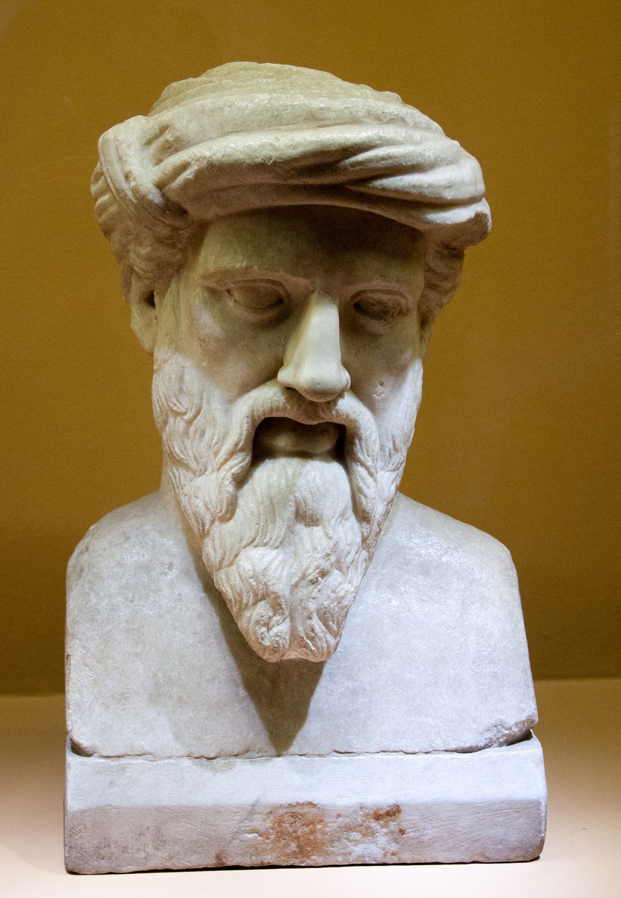

The History of Mathematics
Introduction
Mathematics perhaps was the thing you were afraid of when you were a child and you wish it hadn’t been invented but you never felt how much it is important, you can’t live one day without using it. Now we use it in different fields, such as machine learning, computer science, data science, etc. Have you thought previously about how it was created? How did it?

What is The Importance of Mathematics?
The daily usages of math are numerous. These are the most common usages:- Estimating the ingredients when you cook.
- Counting calories if you are on a diet.
- Calculating time.
- Finance field, is the most important thing because money controls the world now.
How Did Mathematics Start?
The human usage of math started before the invention of writing, so we can't know for sure how it started because math is like a discovery, not an invention. However, there are a few theories. One theory suggests it was developed by needs, such as when two men collected a basket of berries and wanted to split it, they set the division. Even in antiquity, it was developed by the ancient Egyptians and then the ancient Greeks.
The Most Important Mathematicians Developed It (my opinion)
- Pythagoras (c. 570–495 BCE)
- Al-Khwarizmi (c. 780–850 CE)
- Carl Friedrich Gauss (1777–1855)
Pythagoras was an ancient Greek; he was a mathematician and philosopher, and he had a school called the "Pythagorean School of Thought." He is famous for his theory in trigonometry: (a2+ b2 = c2 ). It only works in a right triangle to calculate the length of the hypotenuse from the sum of the other two sides
Al-Khwarizmi is a Persian Muslim scientist and is considered the founder of algebra. He is credited with the invention of the number zero and played a significant role in solving linear and quadratic equations. The term “algorithms” is derived from his name.
Carl Friedrich Gauss was a German mathematician who made many contributions to mathematics, as well as astronomy and optics. He is renowned as the “prince of mathematicians.” His most important contributions are in both pure and applied mathematics.
Conclusion
I think now you are starting to respect mathematics, and maybe you want to learn it again. I hope you enjoyed reading this; Wait me for more!